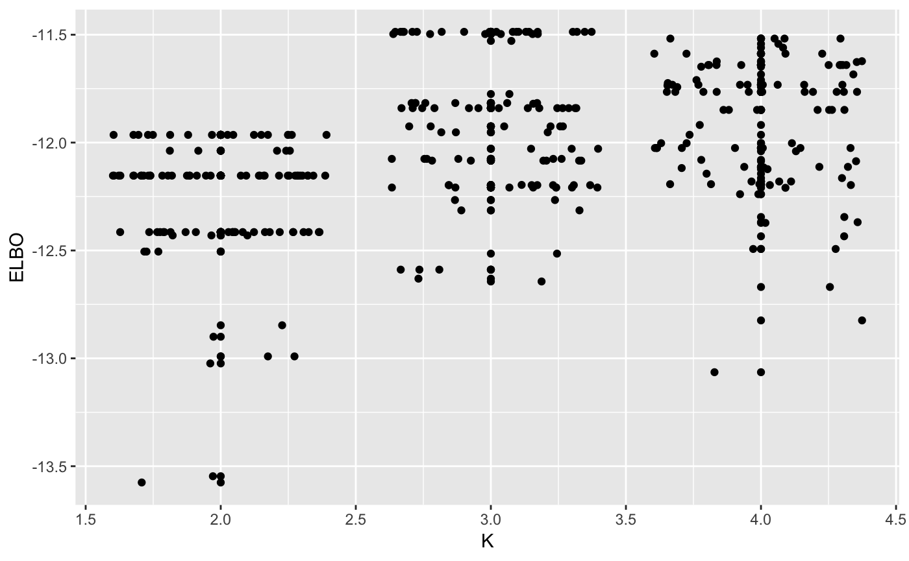

categorical-data.Rmdlibrary(vimix)
data("mushroom")
## Use variational inference for mixture of Gaussians to find clusters
output <- vimix(mushroom[1:100,], K = 7, verbose = T)library(ggplot2)
library(broom)
## Check that the lower bound is monotonically increasing
lb <- tidy(output$L[-1])
lb$ELBO <- lb$x
lb$x <- NULL
lb$iter <- c(1:length(output$L[-1]))
# lb$number_clusters <- output$Cl[-1]
## Plot lower bound
plot_lb <- ggplot(lb, aes(x=iter,y=ELBO)) + geom_line(linetype = "dashed") + geom_point()
plot_lb
## Plot number of non-empty clusters
# plot_nc <- ggplot(lb, aes(x=iter,y=number_clusters)) + geom_line(linetype = "dashed") + geom_point()
# grid.arrange(plot_lb, plot_nc, ncol = 2)maxK <- 2
n_random_starts <- 100
ELBO <- matrix(0, maxK-1, n_random_starts)
for(k in 2:maxK){
for(j in 1:n_random_starts){
output <- vimix(mushroom[1:50,], K = k, indep = T)
ELBO[k-1,j] <- output$L[length(output$L)]
}
}
library(reshape)
ELBO <- melt(t(ELBO))
names(ELBO) <- c('start_n', 'K', 'ELBO')
ELBO$K <- ELBO$K + 1
ggplot(ELBO, aes(x = K, y = ELBO)) + geom_point() + geom_jitter()